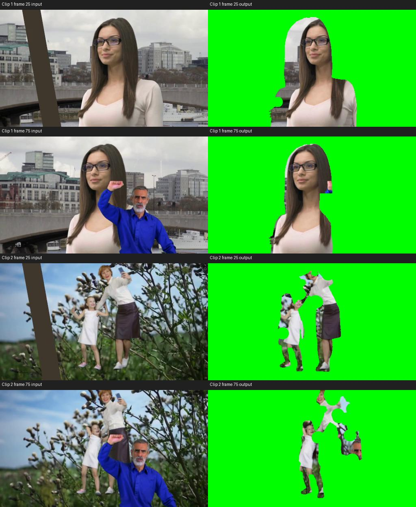

gpt-6-luna / high · 不限时 · 实际作答 25.98 分钟
正式分待校准；没有设定自动及格线。两段交付格式通过，全片语义合规未通过，完整软件合规待核实。
Sol 原始分50.9294，本轮相差 -41.3339 分。时间预算与基础设施修正时点不同，不能当作严格等预算模型对照。
10个计分样本全部通过基础门槛；90.4045 分损失全部来自边缘不匹配。语义失败不再次扣这项原始分。
第一段人物旁留有天空、建筑及路人局部；第二段目标人物被大面积切掉，植物及路人碎片残留。以下展示公开固定时刻，未披露隐藏评分采样位置。

左：原始输入；右：Luna 冻结成片
门槛失分：0.0000；全画面边缘失分：13.3037；目标区域边缘失分：30.6823。
左：原始输入；右：Luna 冻结成片
门槛失分：0.0000；全画面边缘失分：13.9804；目标区域边缘失分：32.4381。
DRP 成功导入独立工程，含独立绿底与 RGBA 前景轨道。加载副本后桥接仍可查询，但写入方法未返回有效结果；重链接未生效，未完成独立重渲染。不将基础设施异常记为画面质量扣分，也不据此判定工程损坏。线性光合成未确证。
导入的 PNG 序列为 24 fps，25 fps 时间线中的条目延伸至 104 帧，而最终只渲染 100 帧；存在输入输出帧序错配风险，未修正提交。
失败的评审服务请求已归档；复用已有有效评审，只补齐缺项，不挑选更有利的分数。
下载公开分项与完整语义评审| 片段 | 得分 | 门槛失分 | 全画面边缘失分 | 目标区域边缘失分 |
|---|---|---|---|---|
| 片段 1 | 6.0140/50 | 0.0000 | 13.3037 | 30.6823 |
| 片段 2 | 3.5815/50 | 0.0000 | 13.9804 | 32.4381 |
每段5个评分样本，每样本最多10分。任一基础门槛失败，该样本计0分；通过后，得分为 3×全画面边缘IoU + 7×目标区域边缘IoU。本轮门槛失分为0，边缘失分合计90.4045，最终9.5955。
边缘得分反映轮廓匹配程度；具体错因需要结合输入输出画面。全片语义结论单列，不再追加扣分。24fps素材与25fps时间线的错配风险未单独量化扣分；软件复验受桥接异常影响，不能据此认定模型工程损坏。
以上为公开展示帧，不是隐藏评分样本清单。全片审阅覆盖两段各100帧。
[0,10): 逐帧查看000–009：输出均保留身份图中的戴眼镜、深色长发、浅色上衣女性，面部、眼镜、发型及上半身与各帧输入对应，未见其他人物替代。005–008下巴下缘的局部缺失属于遮罩问题，不作为身份错误。 [10,20): 逐行核对第10–19帧：输出均保留身份图中的同一位女性，黑框眼镜、长直棕发、面部特征及浅色上衣与各帧输入对应，未见其他人物或身份替换。第10–18帧下颌附近有绿色缺口，头发左侧有背景残留，属于抠像缺陷，不据此判为身份错误。本结论仅覆盖这十帧。 [20,30): 逐行核对第20–29帧：输出中均仅有身份图所示的长棕发、深色眼镜、浅粉色上衣女性，其面部、眼镜、发型及上身与对应输入一致，未见其他人物或身份替换。头发及衣物轮廓的抠像缺损不作为身份错误。 [30,40): 逐行检查第30–39帧的输入与输出，并与身份图对照：输出中的人物均为目标女性，深色长直发、深框眼镜、面部特征及浅色上衣一致，未见其他人物替代。此判断仅覆盖所供十帧，不把遮挡处理或轮廓误差直接判为身份错误。 [40,50): 逐行检查帧40–49：输出中的女性均与身份图及对应输入中的目标一致，黑框眼镜、面部、棕色长发、浅粉色领口和上身得到保留。帧40–42竖条遮挡部分脸侧、头发及上身，但其余可见特征仍对应目标女性；帧43–49仍为同一目标，未见其他人物替代。此结论仅覆盖所给十帧。 [50,60): 逐行核对第50–54、55–59帧：输出均保留身份图中的长棕发、深色眼镜、浅色上衣女性，其面部、发型、颈部、双肩及画内躯干与各帧输入对应；未见目标被其他人物替换或增加其他人物。头发和左肩外侧的背景残留不构成身份错误。结论仅适用于所供第50–59帧。 [60,70): 逐行核对第60–64帧及第65–69帧：输出均保留身份图中的长直深发、戴眼镜、穿浅色上衣的女性；脸部、眼镜、发型及胸前衣领与对应输入一致。十帧均未见换人或加入另一人物。肩部遮挡处理问题另记于visible_only，不据此判为身份错误。 [70,80): 逐行查看第70–79帧：输出保留身份图中的目标女性，眼镜、脸部五官、长棕发及浅色上衣均可辨认，未见另一人物替代目标。右侧头发、颈肩轮廓存在缺损，但这些缺损本身不作为身份错误。此结论仅覆盖所提供的十帧。 [80,90): 逐行检查第80–89帧：输出中女性的脸型、眼镜、长直棕发和浅色上衣均与身份图及对应输入中的目标女性一致，未见换成另一名女性。身体区域存在明显抠除缺损，但不能仅据此认定目标身份错误。本结论仅覆盖这十帧。 [90,100): 逐行检查第90—99帧：输出中的长发、眼镜和浅色上衣女性与身份图一致，但并非仅保留该女性。第90—94帧，女性颈部及胸前左侧仍有蓝衣男子的灰发、面部和胡须；第95帧男子面部虽出现绿色孔洞，仍有可辨认残留；第96—99帧仍保留男子头部和面部。因此不满足“仅目标女性”，此判断依据是非目标人物的明确残留，而非普通软边误差。
[0,10): 逐帧查看000–009的输入及输出：本段输入未见蓝衣男子或作为干扰物的竖条，输出亦未出现这两类干扰物或额外人物。此结论仅覆盖所给十帧。 [10,20): 逐行检查第10–19帧，输出均未出现蓝衣男子。第16–19帧输入画面最左侧出现并逐渐加宽的深色竖条，在相应输出中被绿色背景替代；第10–15帧也未见输出保留该竖条。女性头发左侧残留的是原场景建筑、桥梁背景，并非该竖条。 [20,30): 逐行核对第20–29帧：输入画面左侧向右移动的深色竖条，在各帧输出中均未保留；第29帧竖条已触及女性画面左下侧衣物，输出仍未出现该竖条。本范围未见蓝衣男子。输出保留的部分建筑、栏杆背景不属于该竖条。 [30,40): 第30–39帧输出均保留了深色竖条。第30–32帧可见其残留在女性左侧头发、肩胸旁；第33–39帧竖条继续横跨头发、面部或胸前，尤其第35–39帧保留了大段完整条带，未将该干扰物排除。 [40,50): 检查帧40–49：帧40–42输出仍保留明显深色竖条，穿过目标画面右侧的脸侧、头发和上身区域；帧43–45右肩及衣袖外侧仍有竖条残留。这些是具有明确面积的遮挡物残留，并非普通软边误差。帧46–49输出未见该竖条；输入帧45–49右边缘出现的蓝衣男子手部和蓝色衣袖在对应输出中未见保留。 [50,60): 逐行核对第50–59帧：输入右侧蓝衣男子逐渐显露的抬起手掌、蓝色衣袖、头脸和躯干，在对应输出中均未保留。第50–56帧输入右上方可见的深色斜竖条也未出现在输出中；第57–59帧输出同样未见该竖条残留。 [60,70): 逐行核对第60–69帧：输入中女性画面右侧的蓝衣男子持续举臂并改变位置；对应输出均未保留其灰发、脸部、举起的手掌、蓝色袖子或躯干。女性周围为绿色背景，十帧均未见该男子的可辨认部分。 [70,80): 已查看第70–79帧。第70–71帧未见明确的蓝衣男子残留；第72帧起，输出中女性画面右侧头发边缘出现蓝色残片；第73–79帧该处还保留男子的肤色手部和蓝色袖口，第77–79帧尤其清楚。这些是干扰人物的手和衣袖，不能归为女性头发的普通软边误差。 [80,90): 第80–89帧均未完全排除蓝衣男子：输出在女性下巴或面部左下方保留了男子的拳头，部分帧还保留蓝色袖口。第82帧开始，女性画面右侧的头发、颈肩附近出现男子头部残片；第83–89帧可明确看到男子的灰发、额头、眼睛或胡须。这些是可辨认的干扰人物部位，并非普通软边误差。 [90,100): 第90—99帧均未完全排除蓝衣男子：每帧输出在女性左侧颈胸附近保留男子头部或面部。第90—94帧还可见输出左上侧残留的抬高手掌及蓝色袖口；第95帧男子脸部被局部挖空，但其余面部仍在；第96—99帧仍能辨认男子的灰发、额头、眼鼻及胡须区域。男子躯干大部分变绿并不足以证明其已被排除。
[0,10): 逐帧对照000–009：女性头部、头发及上半身的位置变化总体随输入变化，未见整段静帧替代或另造人物，也未见补全被遮挡肢体。但005、006、007、008的输出在下巴下缘至上颈部出现明确的绿色缺口，对应输入处为连续可见的下巴及颈部，没有遮挡物；这些帧的身体显露范围与原片不对应。000–004及009未见同样的下巴缺口。 [10,20): 逐行对照第10–19帧，输出保留的脸部、眼镜、头发、肩臂和上衣均可在对应输入帧中找到，人物细微位置及表情变化与输入相符，未见静帧或另造人物替代。第16–19帧竖条尚未遮到女性，输出未增加被其遮挡的身体部分；画面下缘外的身体也未被补出。第10–18帧下颌绿色缺口及各帧发侧背景残留是抠像缺陷，未显示遮挡补全。本结论仅覆盖第10–19帧。 [20,30): 已逐行比较第20–29帧。第20–28帧未见明确补全遮挡部位的证据；第29帧输入中，深色竖条遮住女性画面左下侧、接近底边的一小段浅粉色上衣，输出对应位置却呈现连续的浅粉色衣物并恢复了左侧轮廓，保留了原帧中被竖条遮挡的部分。此处属于遮挡对应错误，而非普通软边误差。 [30,40): 已逐行对照第30–39帧。第38–39帧可明确看到面部显露区域与当帧输入不对应：输入中画面左侧的眼镜镜片及左侧脸部露在竖条左边，画面右侧镜片和脸部受到竖条遮挡；输出却将左侧面部遮住，并在竖条右边露出右侧镜片及部分脸部。该差异涉及眼镜和面部内部的遮挡关系，不能用普通软边误差解释，未满足显露部分与原帧对应的要求。 [40,50): 逐帧对照帧40–49的输入与输出：目标面部、眼镜、长发、领口及可见上身均能对应原帧。帧40–45的竖条遮挡区域未见被补成完整脸部、头发或衣袖；帧46–49竖条移开后，目标右侧肩部和衣袖的显露与输入对应。十帧之间目标随原片变化，未见静帧或另造人物替代。竖条残留另记于distractor_excluded。 [50,60): 逐行对照第50–54、55–59帧：女性可见的脸部、眼镜、长发、领口、肩臂及躯干均与同帧输入对应，细微位置及轮廓变化也保持对应，未见用固定静帧或另造人物替代。此区间蓝衣男子及竖条未遮住女性主体，输出未见凭空补出的被遮挡肢体，也未将画面下缘之外的身体补入。头发左侧和左肩旁可见背景残留，但不属于遮挡补全。 [60,70): 已逐行对照第60–69帧。第60–64帧，男子的蓝色手臂与女性画面右侧肩部交叠，输出在部分原本为蓝袖的交叠位置仍呈现浅色肩袖。第65–69帧更明显：蓝色前臂及肘部遮住女性右侧发梢邻近的肩头、上臂区域，输出却保留一段连续的浅色肩部斜面，未严格按输入中的可见部分截断。该问题涉及遮挡区域的衣物补出，超过普通软边误差。 [70,80): 逐行对照第70–79帧输入与输出。第75–79帧，输入中男子弯曲的蓝袖前臂遮住女性部分颈部及上胸，输出却在相应位置保留连续的女性皮肤或浅色上衣。例如第76帧，输入中女性下颌下方偏画面左侧的颈部被蓝袖覆盖，输出对应位置仍显示颈部皮肤；第77–79帧亦有同类遮挡对应不一致。因输出显示了输入中被遮挡的目标部位，不满足仅保留当帧可见部分的要求。 [80,90): 核对第80–89帧的输入与输出，显露及遮挡区域未保持对应。第80–84帧，输出残留的拳头比对应输入中的拳头更靠近女性下巴中央，周围绿色遮挡轮廓也与输入中的蓝色前臂位置不一致。第85–89帧，输入中男子的拳头及前臂向画面左侧抬起，输出却仍在女性脸颊或下巴左下方保留手部残片；同时，女性在输入中清楚可见的右肩、浅色衣袖及部分胸前区域被大片绿色切除。该问题涉及具体身体区域与逐帧遮挡对应关系，超出轻微软边误差。 [90,100): 逐帧对照第90—99帧输入与输出：输出保留的女性眼镜、面部、长发、领口及浅色衣服均对应同帧输入中实际可见的部位；随帧变化的头部位置、发丝和衣领位置也与对应输入一致。男子遮挡女性的区域主要被置绿或残留男子原始像素，未见把遮挡后的女性身体补画出来；未见以静帧或另造人物替代。此结论仅覆盖第90—99帧，不表示人物提取完整或干扰者已排除。
[0,10): 逐行核对帧000–009及身份图。帧000–001中，白裙女孩和白衬衫深裙成年女性均保留，成年女性的头脸、举起的手及手机可见。帧002–009中，女孩持续保留，但成年女性原片中清楚可见的大部分头脸、举手机的手臂及手机被绿色区域截去；帧003–009的鞋脚也有明显缺失。成年女性的躯干和裙子仍可辨认，但目标人物的重要部位未持续保留，缺失范围明显超过普通软边误差。 [10,20): 已逐行核对第10—19帧及身份图。输出中仍有女孩和成年女性的身体，但第10—19帧成年女性在原片中可见的头发及大部分头面部被大片绿色切除，只留下局部面部碎片；持手机一侧的前臂、手及手机所在区域也明显缺失。这是目标关键部位的大面积缺失，超出普通软边误差，不能判定两名目标均得到保留。 [20,30): 逐行核对第20–29帧及身份图：输出仍可见成年女性的白上衣、深色裙子和女孩的白裙，但两名目标均有大面积可见身体缺失。第20–21帧成年女性在输入中完整可见的头脸，在输出中几乎全部被绿色挖空；第22–26帧头脸继续严重缺失，靠女孩一侧的肩臂和胸前还出现大块绿色缺口。第27–29帧仍仅保留成年女性少量脸部碎片。第20–29帧女孩的头脸、手臂及腿部也持续存在明显缺失。这些涉及身份部位和肢体的大面积删除，不是普通软边误差。 [30,40): 已逐行核对第30—39帧的输入与实际输出，并对照身份图中的成年女性和女孩。第30—32帧，两名目标均未完整保留：女孩的头部、躯干及腿部大片区域呈现枝叶背景，成年女性的头部、白衣上身和腿部也有大面积缺失。第33—35帧，这种缺失持续，左侧女孩形区域逐渐被深色竖条占据，右侧成年女性形区域主要呈现背景。第36—39帧，女孩的脸、白裙和腿出现在右侧区域，而原片中成年女性清晰可见的脸、白衣及深色裙身未得到对应保留。上述是目标身体大面积丢失及内容错位，不是普通软边误差。 [40,50): 逐行核对了第40—49帧及身份图。第40—42帧，输出仅保留女孩脸部、白裙和腿部的部分区域，目标成年女性在输入中可见的脸、白色上衣、深色裙及双腿未得到对应保留。第43—45帧，女孩的头部与上身进一步大面积缺失，成年女性仍基本缺失。第46—49帧，输入中竖条两侧可见的女孩白裙、腿脚和成年女性上衣、裙腿，在输出中仍严重缺失，仅有零散残片；第49帧右侧虽保留部分女性衣裙，也未同时保留两名目标。这些是主体部位的大面积遗漏，非普通软边误差。 [50,60): 逐行核对第50–59帧，两名目标均未完整保留。第50–54帧，女孩原片可见的脸、白裙和腿部在输出中大面积缺失，身体轮廓内主要呈现植物纹理；成年女性只剩零散衣裙、腿脚片段，头脸和上身未得到对应保留。第55–59帧，原片中成年女性的脸、白色上衣及女孩的脸、白裙仍清晰可见，输出却持续缺失这些主要身份部位。第59帧虽出现较多白衣和深色裙片，仍没有对应保留两人的脸和完整可见身体。这是主体部位的大面积缺失，并非普通软边误差。 [60,70): 逐行检查第60—69帧输入与输出，并与身份图中的成年女性和女孩核对。两名目标均未被完整保留：第60—62帧女孩的脸、白裙及身体大块区域被抠除，残留轮廓内可见树枝、草地；成年女性的面部和白色上衣也有大面积缺失。第63—69帧这些问题持续，成年女性头脸大部消失，女孩头脸、躯干及腿部残缺。属于目标主体部位丢失，不是普通软边误差。 [70,80): 逐行核对了70—79帧及身份图。两名目标仍有可辨认的局部，但成年女性存在大面积主体缺失：70—72帧头面部、上衣被绿色区域切断，裙装仅剩局部；73—76帧原片可见的裙身、腿脚在输出中大面积消失；77—79帧仍只保留部分面部和上身，原片可见的下身未被保留。女孩在70—79帧保留部分头部、白裙和腿脚，但也有明显缺口。这些是身体主要区域缺失，超出普通软边误差，不能判定两名目标均完整保留。 [80,90): 已逐行检查80–89帧。80–84帧中，原片成年女性可见的头脸、白色上衣和深色裙身在输出中大面积缺失，仅剩零散衣物碎片；女孩虽保留部分头脸和腿脚，白裙及身体也严重缺失。85–89帧仍未恢复两名目标：成年女性头脸持续被绿底抹除，女孩只剩部分脸、衣物等碎片，腿脚进一步消失。这是目标主体的大面积漏保留，并非普通软边误差。 [90,100): 逐行检查90—94帧及95—99帧：输入中的成年女性和女孩均有清楚可见的头脸及身体部分，但输出未保留两人的可辨认形象。90—99帧中，成年女性的头脸、女孩的头脸和白裙主体大面积被绿色清除，仅留下部分白色衣袖、深色裙装等碎片；98—99帧仍只有局部裙装和腿部残片。这是目标主体的大面积缺失，不是普通软边误差。
[0,10): 逐行回看帧000–009的输入与输出。十帧输出均未见蓝衣男子或独立竖条状干扰物残留；两名目标人物周围的天空、草木和枝条背景均被绿色背景替换。此结论仅适用于所提供的帧000–009。 [10,20): 已逐行检查第10—19帧输出的主体周围及左右边界，未见竖条或其他非目标人物残留。第16—19帧原片左边缘出现的棕灰色竖条，在对应输出中均未保留，该区域为绿色。所供第10—19帧原片未见蓝衣男子，此处结论仅适用于这十帧可见内容。 [20,30): 逐行回看第20–29帧：输入画面左侧均有贯穿画面高度的深色斜竖条；对应输出中该竖条均未保留，相关区域为绿色。十帧输出中也均未见蓝衣男子。此结论仅覆盖所提供的第20–29帧。 [30,40): 已检查第30—39帧。第33帧输出左侧人形的躯干和腿部可见深色竖条残留；第34—39帧，原片中的深色竖条大面积进入左侧人形区域，覆盖头部、躯干及腿部，其中第35—39帧尤其明显。因此竖条未被排除。本区间未见蓝衣男子，不能据此评价其他区间。 [40,50): 逐行核对了第40—49帧。第40—44帧，输出上部保留明显的深褐色竖条碎片，其颜色及位置对应输入中的遮挡竖条；第45—49帧，上部仍持续保留该竖条的深褐色片段，未将竖条完整排除。第45—49帧输入右侧出现的蓝衣男子，其蓝色衣袖和抬起的手在输出中未见明显保留，但竖条残留已使本项不通过。 [50,60): 已检查第50–59帧。第50–54帧输出右侧仍有明显深褐色竖条残留，其中第50–52帧为较长的连续竖向区域，第53–54帧上段仍清楚可见。第52–57帧，输出右侧衣裙残片附近还保留了蓝衣男子举起手掌的肤色片段，第53–56帧尤为明显。男子的蓝色躯干和脸大体被去除，但竖条及手掌残留已使排除要求不成立；第58–59帧未见同样明确的连续竖条，不据此推断这两帧存在相同问题。 [60,70): 检查范围为第60—69帧。蓝衣男子的头部及大部分蓝色躯干已被去除，但第66—69帧成年女性深色裙子左侧、腰部附近仍残留男子抬起的肉色手掌，与对应输入中男子举手的位置和形状相符，说明干扰人物未被完全排除。 [70,80): 已回看70—79帧。73帧输出右侧残片下缘开始出现前景男子的头部皮肤残留；74—76帧可见其灰发、额头及部分面部；77—79帧该残片中保留的男子眉眼、鼻部等面部区域更明显。对应原片中的蓝衣男子，属于非目标人物残留，不能因蓝色衣身大部分已被去除而判定排除成功。 [80,90): 已逐行检查80–89帧。80–84帧输出中央偏右明确残留蓝衣男子的额头、眼睛或脸部；85–86帧仍有其脸部碎片。82–89帧女孩脸下方、目标女性裙身旁还残留男子举起的手部，87–89帧尤其可见粉色手掌或手指。因此蓝衣男子未被完全排除；此判断依据其具体身体部位，而非目标轮廓的软边。 [90,100): 逐行检查90—99帧，输出均残留输入中蓝衣男子的头脸。90—94帧可见灰发、额头、眼鼻及部分胡须；95帧脸部虽被绿色进一步切断，仍有可辨认的面部残片；96—99帧继续保留额头、眼鼻或侧脸。蓝色上衣大部分已清除，但男子头脸未被排除。
[0,10): 逐行比较帧000–009的显露情况。帧000–001中，两人的可见身体部位与输入基本对应。帧002–009中，输入里的成年女性头脸和举手机的手臂仍清楚可见，输出相应位置却出现大块绿色缺口；帧003–009中，输入可见的白鞋和脚部也被明显截去。因此输出的显露范围与原片不对应。这些是原片可见部位被误删，并非原片遮挡造成；未据此推断存在遮挡补全或另造人物。 [10,20): 已对照第10—19帧原片与输出，存在目标可见姿态不对应的问题。尤其第15—19帧，原片女孩的双臂向身体两侧伸展，画面右侧的手臂逐渐向成年女性方向抬起；输出中相应手臂却持续呈贴近身体、向下垂落的形态，未随原片姿态对应变化。第16—18帧输出女孩画面左侧腰部还出现明显绿色圆弧缺口。上述手臂姿态差异涉及整段肢体，不能仅解释为软边误差，不符合显露部分须与对应原片一致的要求。 [20,30): 逐行对照第20–29帧，输出显露内容与同帧输入中的目标可见部位不对应：女孩画面左侧头部及腿部附近持续保留明显的枝叶、花穗背景纹理，而输入对应目标位置可见的是头脸或裸露腿部；成年女性靠女孩一侧的肩臂附近也残留植被。第22–26帧女孩画面左侧腰部和成年女性靠女孩一侧的胸臂区域出现大块绿色圆形缺口，输入同帧这些位置并无对应遮挡；第27–29帧头脸缺失及植被混入仍持续存在。未见足以认定另造人物或静帧替代的证据，但上述可见内容对应错误已不满足本项要求。 [30,40): 已逐帧比较第30—39帧。第30—32帧，输出在人形内部保留大片原片背景枝叶，同时删除原片中实际可见的目标脸部、衣服和肢体，保留区域与当帧人物可见部位不对应。第33—35帧，左侧人形内部出现竖条，右侧成年女性的上身及腿部区域大量呈现背景。第36—39帧，女孩的脸和白裙进入右侧成年女性形区域，左侧区域则保留竖条与枝叶；原片中成年女性仍清晰可见，却未在输出中对应显露。可直接确认显露内容与原片当帧不对应；不据此额外推断遮挡补全或另造人物。 [40,50): 逐行对照了第40—49帧的输入与实际输出。第40—44帧，输出在真实女孩左侧保留另一组头、躯干、手臂和双腿轮廓，其中可见的是花枝、草地等背景纹理；对应输入位置并无目标人物的这些身体部位。第45—49帧，这组背景纹理的人形区域仍持续存在，而真实女孩位于其右侧、竖条附近。输出的人物状保留区域因此未与原片当帧可见的人体对应；此判断依据大面积背景被保留成人形及真实人体缺失，不是依据轻微边缘误差，也不需要推断是否进行了遮挡补全。 [50,60): 逐行对照第50–59帧，输出显露内容与各帧原片不对应。第50–54帧，女孩原本可见的白裙及身体位置在输出中成为含树枝、花苞的区域，右侧还显露原片中的遮挡竖条。第55–58帧，女孩躯干轮廓内部持续显示植物纹理，成年女性可见的头脸、上衣和腿部则被切成相互分离的片段。第59帧，女孩胸腹处出现大块绿色孔洞及植物纹理，成年女性头脸仍缺失，输出的白衣残片也未对应保留原片可见上身。上述为主体区域的内容对应错误，超出轻微边缘误差；本结论仅覆盖第50–59帧。 [60,70): 逐行对照第60—69帧，输出显露内容与原片可见目标部位不对应。第60—64帧女孩原本清楚可见的脸、白裙和腿部，在输出相应人形区域内出现大片树枝、天空或草地纹理；第65—69帧仍可见类似错位，成年女性头脸和上衣区域也被大块切除，部分轮廓内保留了背景。这不是仅沿人物边缘的轻微误差。此结论依据显露内容不对应，不据此推断存在静帧或遮挡部分补全。 [70,80): 逐帧对照70、71、72、73、74、75、76、77、78、79帧，输出中尚存的女性面部、白色上衣及女孩头部、白裙等影像片段均能对应到同帧原片。70—74帧到75—79帧，这些片段随原片人物的位置和姿态变化，未见用同一静帧替代。成年女性被前景男子遮挡的区域未出现补造的完整肢体，也未见另造人物。此项仅确认可见影像来源及未补全遮挡部分；大面积漏保留和男子残留分别记录于另外两项。 [80,90): 逐行回看80–89帧，输出中残留的女孩头脸、女性衣袖和裙片，以及80–86帧的零散腿脚，均可在相应输入帧找到来源；这些碎片随输入逐帧变化。男子遮住目标的区域未见被补成完整目标身体，也未见以静帧或另造人物替代。上述结论仅适用于本次提供的80–89帧；目标大量缺失及男子残留已分别在另外两项记录。 [90,100): 逐行对照90—94帧及95—99帧：输出残留的白色衣袖、深色裙装、局部腿部、男子脸部及树枝背景碎片，均能在同帧输入的相应位置找到。男子面部及背景纹理随各帧输入变化，98—99帧的裙装和腿部残片也对应当帧输入；未见补出被男子遮挡的目标身体、使用静帧或另造人物替代。此项仅确认90—99帧的显露内容来源对应；目标漏失和干扰人物残留已分别记录。
完整交付包（含工程与依赖素材） · Resolve工程 · 模型交付说明 · 独立评分记录
模型自述仅作为方法来源，不作为独立评分依据。